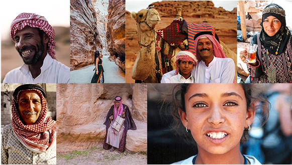
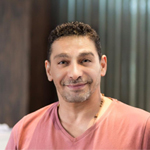
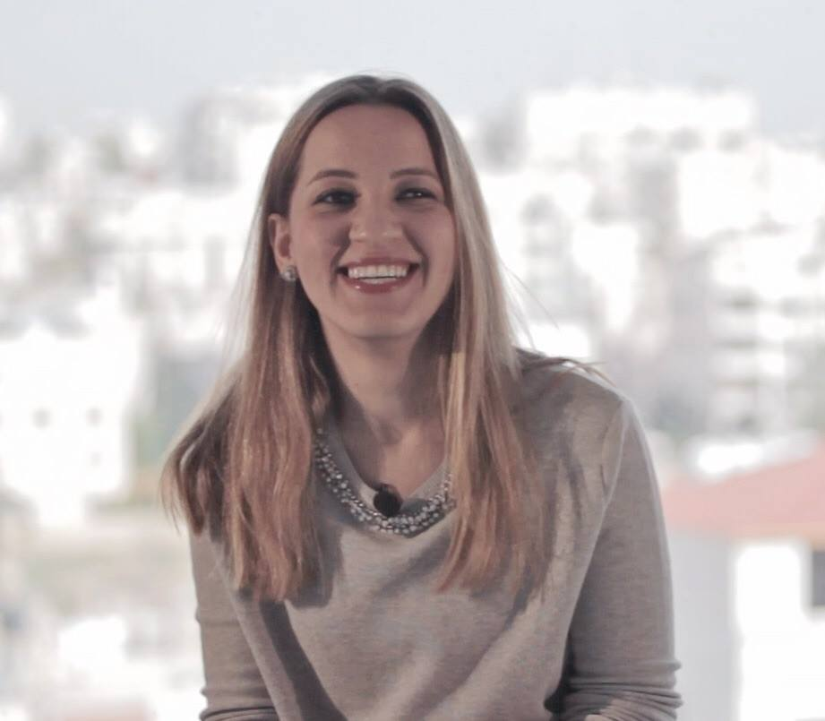
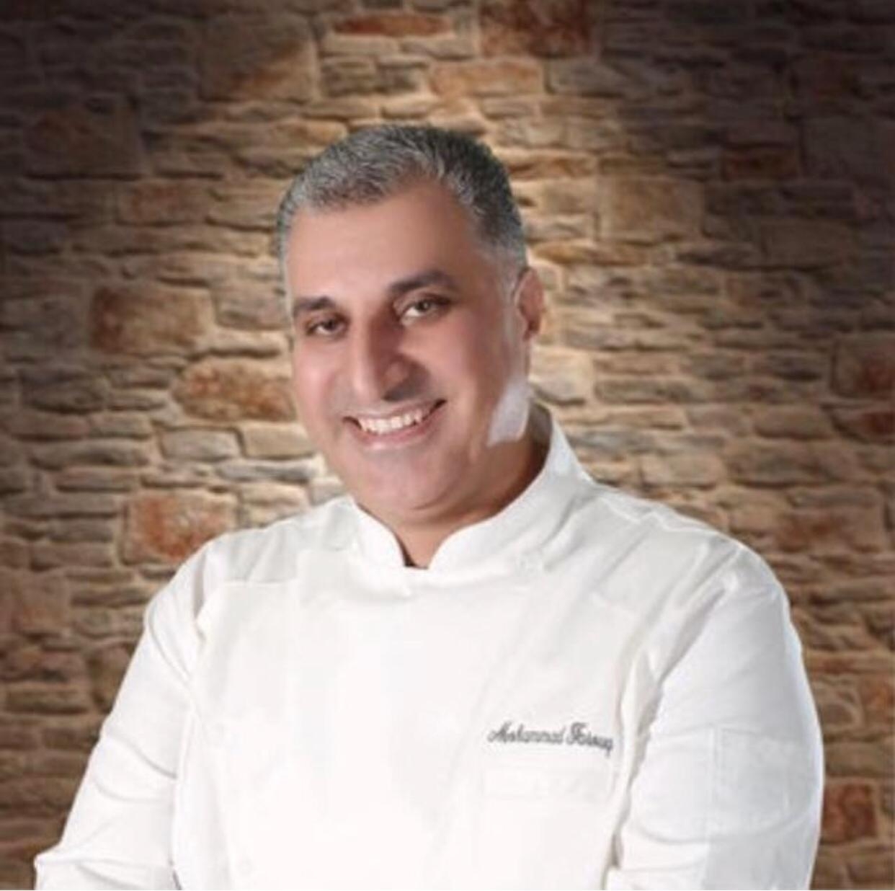

Boxeh was built through the support of local talents and creative entrepreneurs. We
aim to encourage and nurture a spirit of innovation by working with local talents to support a new
generation of entrepreneurs focused on creating innovative solutions to address regional societal
challenges and build a better tomorrow.
Our Inspiration

Opportunities for entrepreneurship in Jordan and the region are very high.
Entrepreneurs who have proven their ability to innovate
Her Majesty King Abdullah bin Al Hussein
The potential for entrepreneurship in Jordan and the region is high. Local entrepreneurs have demonstrated
they are increasingly innovative in devising ways to tackle the evolving societal challenges with novel
applications of technology. In fact, 27% of the 100 start-ups shaping the future of the Arab World are
based in Jordan.
What’s more, the Arab World is experiencing a startling growth in both the number of successful startups
and the amount of investment funding available to them. According to a report released ahead of the World
Economic Forum on the Middle East and North Africa, $900 million was invested across the region in funding
start-ups in 2018, that is a 31% increase in total funding from 2017.
In the $8.3 billion e-commerce sector in the Middle East and North Africa (Mena), it is the e-grocery
segment that has perhaps experienced the most amount of disruption. But for the kitchen-savvy who crave
simple meal preparation without sacrificing quality or convenience, there is an untapped opportunity in
the meal kit industry (worth over $1.5 billion globally) that’s begging for venture firms to put more
cooks in the kitchen.
Meet Our Collaborators
Some of the local talents that have been instrumental to the launch of our project.

Emad Dalbah
Art Director
Emad Dalbah is a multi-talented graphic designer and creative director with over twenty years of
experience in the design and printing industries. Emad’s diverse professional experience includes building
brand identities and promotional material for startups and small businesses as well as creating
well-rounded marketing material, digital products and web designs for corporate giants and luxury brands
across various industries in the region.
brand who have artisan production methods and environmental sustainability at the core of their business.

Dina Bokai
Content Writer
Dina Bokai is a content writer based in Amman, Jordan. She works with brands, creative entrepreneurs and
small businesses to help them find their voice, tell their story and connect with their community through
crafting engaging content. When she’s not busy creating content for her clients, she writes about personal
development and finding more joy and meaning in our daily lives. Her writing has been featured in various
local and international outlets. You can also find her writing online over at (www.dinabokai.com). Dina
doesn’t spend much time cooking in the kitchen, but when she does, she enjoys making all kinds of pasta!

Chef-Mohammad-Farouq
Executive Chef
Chef Mohammad’s journey in hospitality began at the early age of fifteen. His admirable discipline and
determination earned him the title of Executive Chef at the age of twenty-five.
Mohammed has 25 years of experience working in the tourism and hospitality industry. Before joining
Sheraton Amman Al-Nabil in Jordan as the first Arab Executive Chef at the hotel, Mohammad worked at
numerous hotels and resorts in Jordan and the region, including the Intercontinental, Kempinski Aqaba and
Via Nova Group.
During his time working at nature reserves, Mohammad had the privilege of training Bedouins on cooking and
food hygiene. He was awarded the title “Champion of Sustainability” in 2013 by Six Senses Resorts, to
recognize his successful efforts in limiting food waste.
Mohammad’s cooking style is simple yet innovative; he focuses on highlighting the inherent natural flavors
of the ingredients in his culinary creations. He is passionate about developing Middle Eastern cuisine and
sharing his knowledge and expertise with others.